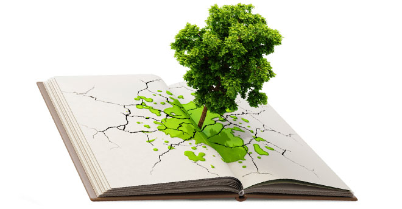
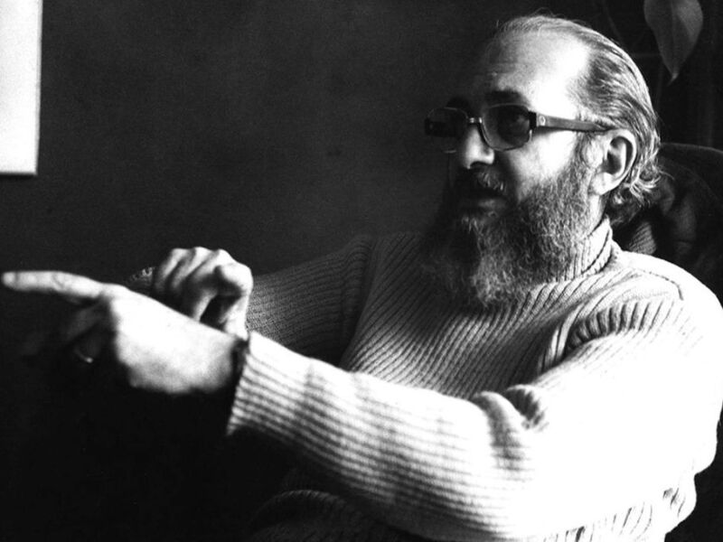
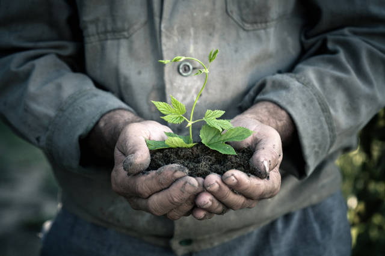

Sustentabilidade
Sustentabilidade
Definição

A definição mais citada vem da Comissão Mundial das Nações Unidas sobre Meio Ambiente e Desenvolvimento: “desenvolvimento sustentável é um desenvolvimento que atende às necessidades do presente sem comprometer a capacidade das gerações futuras de atender às suas próprias necessidades”.
Na carta do Comitê de Sustentabilidade da UCLA, sustentabilidade é definida como: “a integração da saúde ambiental, equidade social e vitalidade econômica para criar comunidades prósperas, saudáveis, diversas e resilientes para esta geração e as próximas. A prática da sustentabilidade reconhece como essas questões estão interconectadas e exigem uma abordagem sistêmica e um reconhecimento da complexidade.”
As práticas sustentáveis apoiam a saúde e a vitalidade ecológica, humana e econômica. A sustentabilidade pressupõe que os recursos são finitos e devem ser usados de forma conservadora e sensata, tendo em vista as prioridades de longo prazo e as consequências da forma como os recursos são usados. Em termos mais simples, a sustentabilidade é sobre nossos filhos e netos, e o mundo que deixaremos para eles.
O pensamento ambiental de Paulo Freire
Todos nós sabemos que no campo existem árvores e animais de todas as espécies. E foi assim que convidado para fazer uma palestra sobre meio ambiente Paulo Freire pôde mostrar que no seu método de ensino havia uma preocupação com a natureza. O educador tornou-se uma referência para a temática após ser convidado para participar da Conferência das Nações Unidas sobre o Meio Ambiente e o Desenvolvimento, também conhecida como Eco 92, no Rio de Janeiro.
As escolas que educam as suas crianças baseadas na metodologia freiriana são as que mais se preocupam com o meio ambiente e ao mesmo tempo com o pensamento crítico e reflexivo dos seus alunos. O pensamento de Paulo Freire sobre a educação ambiental entra na escola de educação infantil e fundamental quando a criança é convidada ao diálogo na construção do seu conhecimento, ou seja, quando o professor deixa que o seu aluno fale daquilo que chama a sua atenção, das coisas ao seu redor e nada melhor do que neste momento o professor introduzir o tema da natureza para que o diálogo possa desencadear várias questões necessárias ao momento em que estamos passando com poluição, desmatamento, queimadas e tantos outros problemas.
Esse diálogo sempre conduzido pelo professor pode trazer o tema do meio ambiente e outros também, o importante é que o aluno possa apresentar o seu pensamento de forma autônoma e crítica. Assim, é dada a oportunidade ao aluno de pensar na importância das florestas, dos animais, dos oceanos e etc.
Outro aspecto que pode ser observado no pensamento de Paulo Freire e trazido para a sala de aula das crianças é quando as vemos como agentes transformadoras da sociedade e do meio onde vivem, ou seja, a criança que tem o pensamento crítico ela consegue com a sua curiosidade transformar o mundo em sua volta fazendo com que os adultos reflitam sobre os seus gestos e atitudes. Isso pode ser bem utilizado quanto ao meio ambiente, pois a criança que dialoga na escola sobre a natureza vai saber que não se pode jogar lixo na rua e, logo vai chamar a atenção do adulto para a sua atitude. Com isso, ela consegue transformar as pessoas para melhor criando um mundo mais saudável para se viver.
Transformar a sociedade para uma criança sozinha pode ser bem difícil e quase impossível, mas se a criança tiver o auxílio de pais e professores certamente ela conseguirá. Essa sociedade que está cheia de vícios e atitudes agressivas ao meio ambiente. Não se aprende mais soletrando como antigamente, mas se aprende ainda conhecendo as coisas no entorno da escola e com o conhecimento de mundo que as crianças trazem para dentro dela. E isso é importante.
“Em ‘Pedagogia da indignação’, Freire diz que não tem como a educação acontecer sem levar em conta o entorno da escola. Do pensamento freiriano o aluno sabe que está inserido num local e que faz parte do planeta. Com esse saber o aluno ou criança traz tudo o que tem fora dos muros da escola para dentro dela. E o que tem no planeta de grandioso? O meio ambiente. Essa natureza que precisamos cuidar e que os adultos todos os dias a agridem.
Quando uma criança vê uma floresta sendo queimada ou uma árvore sendo derrubada isso está ocorrendo no local onde vive e é preocupante para ela saber que não pode fazer nada sozinha, mas pode levar tudo o que presenciou lá fora para dentro da escola e dialogar com os professores e amigos sobre o que fazer para evitar tais problemas ambientais. A criança conhece melhor o nosso planeta do que nós próprios porque ela pesquisa, ela lê, ela é curiosa, ela busca nos livros e na internet respostas sobre coisas que deixamos passar despercebidas.
Na fase da alfabetização quando se está aprendendo a ler a palavra “árvore” muitas dúvidas surgem na sala de aula, muitos pensamentos são expostos e tudo isso o professor deve aproveitar para construir um diálogo onde as crianças tenham vez e voz de falar.
Quando a gente fala da natureza nos vem à mente logo florestas, oceanos e animais. Mas, há uma dimensão muito maior em tudo isso que é preciso pensar criticamente sobre como resolver as questões que estão ameaçando a natureza. Há uma ideia no senso comum de que a educação ambiental é necessária para salvar as árvores, os animais e os rios das agressões dos adultos, porém é algo que vai mais além.
Faz-se necessário cuidar da natureza porque ela é a garantia da vida como um todo e porque a gente está ligado a ela. Neste contexto entra mais uma vez o pensamento de Paulo Freire, pois a garantia de vida do homem só pode ocorrer se ele cuidar das coisas ao seu redor, do seu local de moradia, do seu planeta. Assim é que quando ensinamos as crianças a plantarem árvores e limparem as folhas secas dos canteiros das nossas cidades estamos ensinando-lhes a cuidarem do planeta, mas para isso é preciso que as expliquemos o motivo de estarmos praticando aquela ação e deixemos que elas nos façam perguntas.
Próximo ➝